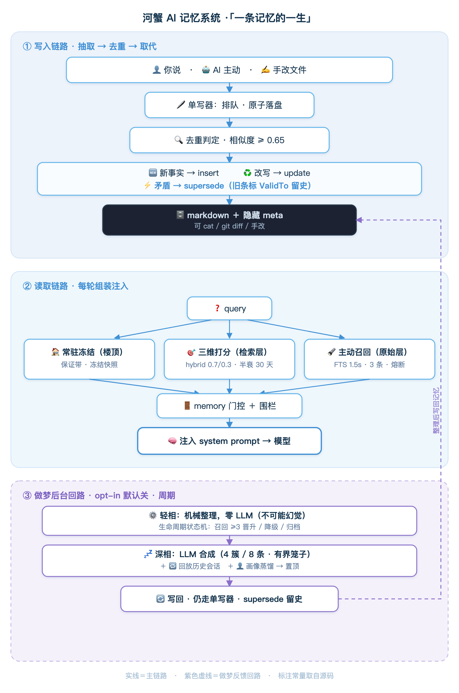

A few days ago, I was looking through HexClaw’s memory files and found this line:
- 我在西湖区 <!--m:subj=所在地; vf=2026-06-20;conf=0.90;hc=2-->That HTML comment at the end of the line disappears when Markdown is rendered. Further down, I found that the “Xihu District” entry was still there, just marked with an expiry time: I had visited the previous week. The currently valid entry was a newer “I am in Yuhang District,” where I usually spend my time. HexClaw had not deleted Xihu; it had simply stamped it with a time.
Claude and ChatGPT have recently added “dreaming” to memory: background processes that organize what you have said into a profile. Anthropic’s May release calls it Claude Dreaming; OpenAI’s June release calls it Dreaming V3. Both borrow the analogy of the brain consolidating memories during sleep. I wanted something similar for HexClaw, but deliberately made two choices differently:
- Every step of memory organization lands in plain text you can
catandgit diff, rather than somewhere in a cloud you cannot see. - The part of “dreaming” that can actually hallucinate—asking an LLM to rewrite your memories—sits inside a bounded enclosure that is locked by default. You control the switch.
Those are the conditions that let me use it comfortably, rather than feature slogans. Let’s follow the opening “location” memory through its life in HexClaw.
First, the building: three tiers and six categories
Before following that memory, here is the whole building. HexClaw memory is not one large pool, but three floors. The idea borrows from operating-system memory management: Letta / MemGPT call these core / recall / archival, applying virtual-memory management ideas to agent memory:
- Resident tier, the top floor: who you are, your hard rules, and long-term preferences. It is frozen into a snapshot at the beginning of a session and injected every turn.
- Retrieval tier, the middle floor: discrete facts such as “in Yuhang District,” “fixing a RAG bug last week,” or “uses Go.” These are not carried every turn. They are scored in three dimensions against the current question, and the most relevant entries are recalled.
- Raw tier, the basement: the complete text of all conversations. Normally left alone, it can be retrieved through full-text search when needed.
A memory’s type selects its tier automatically; you do not fill it in manually. Rules, identity, instructions, and preferences are resident; ordinary facts and context are retrievable. Every entry also belongs to a (user, role) pair. If several people share an agent through Feishu, their memories stay separate.
Every change in this building—something you mention, something the AI decides to remember, a midnight dreaming pass, or a manual file edit—goes through the same single writer. Writes are queued and atomic, without overwriting one another. Even manually edited entries are compared before writing instead of being blindly replaced. We will visit each floor below; this diagram provides the overview:

Storage: a human-readable line with a hidden annotation
Say “I am in Yuhang District,” and HexClaw remembers it. There are two common storage approaches: ChatGPT keeps memories in the cloud, exposing a list in settings; Claude Code stores local files. HexClaw follows the latter, adding one thing: a hidden annotation attached to each memory in structured_entry.go.
That is the end-of-line comment from the opening. subj is the fact’s subject, here its location; vf is the valid-from time; conf is confidence; hc counts recalls. No field depends on a database. They all live in comments at the ends of Markdown lines. It remains plain text you can cat, edit, and git diff, while gaining enough structure to sort, compare, and expire entries. Older entries without annotations still work: parsing simply gives their fields zero values.
Why not put the metadata in a database or vector store? Then you could no longer inspect it with cat, compare it with git diff, or edit it by hand. HexClaw accepts the structural work of “plain text + inline comments + serialized single-writer persistence” to preserve visibility, editing, and rollback. The tradeoff is deliberate: sacrifice a little write throughput for end-to-end transparency. For memory that runs on your machine and edits itself overnight, I consider that worthwhile.
Changing your mind: expire the old entry instead of deleting it
How did this design emerge? Initially, memory was an append-only ledger: keep adding lines and never look back. Over time, two problems appeared: contradictions—which of two values for the same thing should it believe?—and accumulating clutter. History-preserving supersession and overnight dreaming grew out of those problems.
Suppose you usually stay in Yuhang District, then visit Xihu District and mention it. Many memory systems do something I find hard to trust: rewrite the Yuhang entry directly as Xihu. ChatGPT’s Dreaming belongs to that category: background rewriting removes the old value, making it difficult to review what changed.
HexClaw does not overwrite it. It first checks for duplication in upsert.go: a character-bigram similarity above 0.65 makes a new statement a rewrite of an existing fact. But under the subject “location,” Yuhang ≠ Xihu is a contradiction, so it uses supersede—temporal replacement—instead of overwriting. Each fact has a validity window. A contradiction supersedes rather than erases it; Zep / Graphiti call this bi-temporal handling:
// 召回默认只取"当前有效"的条目func IsCurrentlyValid(e, now) bool { if e.ValidTo != nil && !now.Before(*e.ValidTo) { return false // 已被取代,失效 } return true}The Yuhang entry is retained, with a vt expiry time added to its hidden annotation. A new Xihu entry includes sup, pointing back to the old one. Recall defaults to currently valid entries: while you are in Xihu, it answers Xihu; when you return to Yuhang, another supersession switches your location back. The complete round trip—which days you were in Yuhang and when you visited Xihu—stays in the file, visible through git log.
Overwriting erases history; superseding timestamps it. With the former, you have to trust it. With the latter, you can inspect it.
Recall: frozen resident memory, three-dimensional scoring, and active recall
When memory is needed, each floor contributes differently.
The top floor, resident memory, is included every turn. At the start of a session, the engine freezes it into a snapshot, selecting entries within a token budget: pinned entries first, then importance, then recency (resident.go). Your identity and hard rules do not depend on retrieval luck.
The middle floor, retrieval memory, is selected on demand. Once memories exceed the available space, something has to choose. The simplest approach uses vector similarity: recall whatever most resembles the current question. I soon hit its limitation: pure similarity buries important older facts. Suppose two months ago you warned the agent, “That legacy API sometimes acts up; make absolutely sure there is a timeout fallback.” A later question may be semantically unrelated, yet failing to recall that warning could send you into the same trap. HexClaw therefore scores in three dimensions: recency × importance × relevance, following Stanford’s Generative Agents paper (recall/entry.go):
// 三维加权,确定性,零 LLMScore = 新近度 + 重要度 + 相关度// 重要度 = 类型先验 + 显著性 + 召回频次// 规则/身份 1.0 · 指令 0.8// 偏好 0.6 · 普通事实 0.4- Relevance: when an embedding model is configured, use a weighted blend of cosine 0.7 + keyword BM25 0.3. Otherwise, degrade gracefully to keywords alone.
- Recency: exponential decay with a 30-day half-life.
- Importance: calculated from “type prior + salience + recall count,” rather than asking an LLM to score it. Words such as “allergy,” “must,” and “absolutely” add salience, so an important new fact can qualify on its first recall. Every successful recall adds a little more, up to a cap.
“Make absolutely sure there is a timeout fallback” is an important old warning. “Absolutely” triggers salience, raising importance, so the three-dimensional weighted score can still surface it even when it is old or not today’s closest semantic match. There is another deliberate detail: the dimensions have different ranges. Importance can reach 2.0 as type prior, salience, and recalls accumulate, while recency and relevance each top out at 1.0. In other words, sufficient importance can naturally outweigh sufficient similarity. HexClaw calculates how much a fact matters as well as how similar it is.
The basement, raw history, is searched only when needed. These are two separate channels: high-trust curated facts are automatically injected every turn; the full text of raw conversations is accessed on demand. In addition to searches the model chooses itself, HexClaw actively searches old conversations before answering (active_recall.go, enabled by default), surfacing snippets it should remember. This is tightly bounded: at most 3 results; a 1.5-second timeout; entirely local full-text search with zero LLM calls; a circuit breaker after 3 consecutive failures with a 60-second cooldown; one-to-one chats only. Failure silently falls back and never holds up your answer.
Dreaming: organization is allowed; the hallucinating half stays locked
The mechanisms above cover everyday use, but memories become increasingly fragmented. You mention the same project three times this week and five scattered preferences. Periodically, those pieces need organizing into a clear statement and a stable profile. That is “dreaming,” and the origin of this article’s title. HexClaw splits it into two phases, distinguished by what the LLM is allowed to touch.
Light phase: mechanical organization without an LLM
The light phase (reflect.go) only moves and marks entries: merge near duplicates, invalidate contradictions, promote frequently recalled facts to resident memory, and archive stale ones. A deterministic lifecycle state machine (lifecycle.go) applies fixed thresholds with zero LLM calls:
被取代/失效 → 归档(可恢复,非删)检索条召回 ≥ 3 次 → 晋升常驻又旧又不重要 → 归档常驻偏好长期零召回 → 降级回检索pinned / 硬规则 → 永远不动The key is that this phase cannot rewrite the text. It only moves and marks entries, without touching their literal contents, so it cannot hallucinate. Frequently recalled facts rise into resident memory, while long-unused ones sink into the archive. None of this requires or uses a model call.
Deep phase: LLM synthesis inside a bounded enclosure
The deep phase (dreaming.go) introduces an LLM to synthesize a cluster of related, redundant fragments into one coherent memory. This is the part that most resembles dreaming, and the only place new text may be generated. Because it can hallucinate, it has explicit boundaries:
- Only retrieval memory can be touched, never resident memory. Rules, identity, pinned entries, frequently recalled entries (≥ 3 times), and very recent entries (within roughly 4.5 days) are never folded together. Important or still-evolving material stays intact.
- Bounded work: at most 4 clusters per round and 8 entries per cluster enter the prompt. It cannot rewrite your entire memory store overnight.
- Synthesis still never overwrites. New consolidated entries use history-preserving supersession: old entries are invalidated, never hard-deleted, and new ones point back to them. Changes made during dreaming remain visible through
git diff. - The prompt explicitly forbids invention. Consolidation instructions require preserving all key information, dropping no facts, and inventing nothing that was not mentioned.
Replay, and turning fragments into a picture of you
Two further steps sit alongside the deep phase. The first is a replay phase at the engine level, conceptually aligned with Claude Dreaming’s replay of historical sessions: infrequently revisit older conversations to recover facts that were not saved during the live exchange. The second is profile distillation (profile.go): turn scattered preferences and habits—appearing late at night, often saying you are tired, always talking about Go—into a stable user profile, pinned in resident memory. An example is “a tired engineer who often stays up until 5 a.m.” That is what “organizing a profile” means here. The light phase runs more often; deep synthesis and replay run less frequently.
What dreaming actually does for an agent
After all those mechanisms, what practical difference separates an agent that dreams from one that does not?
- Memory does not become a junk drawer. Fragments accumulate with use; without maintenance, noise increases and recall gets less accurate. Regular deduplication, archiving, and merging keep the resident budget and retrieval pool concise. OpenAI also uses “junk drawer” to describe memory without dreaming.
- A picture of you emerges from fragments. Today you mention preferring dark mode; tomorrow you complain that a framework is verbose. Individually, those are fragments. Dreaming distills them into a stable profile, so the next conversation feels more informed rather than starting from scratch.
- Answers avoid expired information. When you move cities, change your stack, or give something up, contradictory old facts are invalidated. The agent recognizes the currently valid entry.
- Lessons survive across sessions. Replay revisits old conversations and extracts patterns such as “where do I repeatedly get stuck on this kind of task?” Harvey reported approximately a 6× increase in completion of repeatedly failing legal-drafting tasks after enabling Claude Dreaming, rather than making the agent repeat the same mistake each time.
- Missed facts can be recovered. Memory may have been disabled during a live chat, a weaker model may not have saved something, or you may have imported old sessions. Replay can recover those facts afterwards.
In one sentence, dreaming is the maintenance process for an agent’s long-term memory. Without it, memory only grows, contradictions accumulate, and profiles become scattered. With it, memory can become more concise, profiles more accurate, and lessons transferable across sessions—the basis for an agent that understands you better over time.
When does it run, and must you manage it? It is enabled by default, running infrequently in the background without repeatedly disturbing your machine. The hallucination-capable phase, LLM synthesis, has an extra guard: you must configure a model yourself before it runs. Without one, only mechanical, non-generative organization executes; an LLM never touches your memories. A desktop-specific detail also matters: shutdown does not lose the schedule. If enough time has elapsed at the next startup, it catches up on the missed sleep, then resumes its infrequent schedule. You can disable it whenever you want. Letting a model change memories remains contingent on your actively configuring that model.
You remain in control, with safety boundaries
Manage it conversationally through manage_memory.go: “Remember that I like dark themes,” “Forget that last entry,” or “Always reply in Chinese” lets the model add, update, delete, or pin memories. It can also decide during a chat what deserves remembering. Two boundaries are fixed: credentials never enter memory—suspected passwords or keys are rejected and directed to the encrypted Connection Center—and every write uses the same single writer, deduplication, and history-preserving rules. Neither proactive AI writes, manual edits, nor overnight dreaming bypass those rules.
That completes the location memory’s life: stored as an annotated Markdown line; invalidated rather than erased when circumstances change; recalled with three-dimensional scoring; and organized into a profile by two-phase dreaming at night. Throughout, you can cat it, git diff it, and change it with one sentence.
A qualification is necessary: the title’s claim that “their dreams are in the cloud” is not entirely accurate. Claude Code’s Auto Dream also organizes local files. HexClaw’s distinction is the combination of three things: the dreaming logic is open source and inspectable; compute can run entirely locally through Ollama, so even consolidation need not send memories elsewhere; and everything stays in plain text with git rollback. None is unique on its own; the combination is the point. I have not published any HexClaw benchmark here. The ChatGPT 82.8% and Harvey 6× figures above come from their public reports. For HexClaw, I am showing mechanisms and constants; without comparative evaluation, I will not invent measurements.
While you sleep, it turns the day’s scattered remarks into a profile that understands you better. This particular dream stays on your machine, on pages you can inspect line by line.
This article covers only memory, the half of a “second brain” that learns and organizes on its own. The other half contains material you deliberately supply—documents, references, and source code: the knowledge base. They share the same local retrieval foundation, but form two distinct kinds of remembering. Memory dreams; the knowledge base does not. That is the subject of the next article.
Earlier articles · HexClaw series
- Previous: Raising a “Cyber Workhorse”—compile a sentence into a self-healing sandbox script that runs scheduled work for you, 24/7.
- vs OpenClaw / Hermes—three paths for local AI agents in 2026.
- Claude Code SOP—design-driven development, a testing feedback loop, and multi-agent collaboration.
- Architecture Deep Dive—one person, Claude, and five months to build six repositories from scratch in Go.
- Connecting Local Reasoning Models—the last mile for Qwen 3.5, Gemma 4, and DeepSeek-R1.
References
- OpenAI · Dreaming: Better memory for a more helpful ChatGPT
openai.com/index/chatgpt-memory-dreaming/ - TechTimes · ChatGPT Memory Dreaming Update: Rewrites Personalization Engine, Limits Audit Trail
techtimes.com/articles/317840 - Claude Platform Docs · Dreams (Managed Agents)
platform.claude.com/docs/en/managed-agents/dreams - Claude Code Auto Dream Explained: Memory Like REM Sleep
decodethefuture.org/en/claude-code-auto-dream-explained - Claude Dreaming — When AI Starts to “Dream”, and Why It Might Hallucinate More
grandlinux.com/en/blogs/claude-dreaming.html - Design reference · Generative Agents: Interactive Simulacra of Human Behavior (Park et al., 2023—the source of three-dimensional recency × importance × relevance scoring)
arxiv.org/abs/2304.03442
Mechanisms and constants in this article follow the upstream source of the hexclaw memory subsystem, checked on 2026-06-27. Information about related systems and design references comes from the public sources listed above.